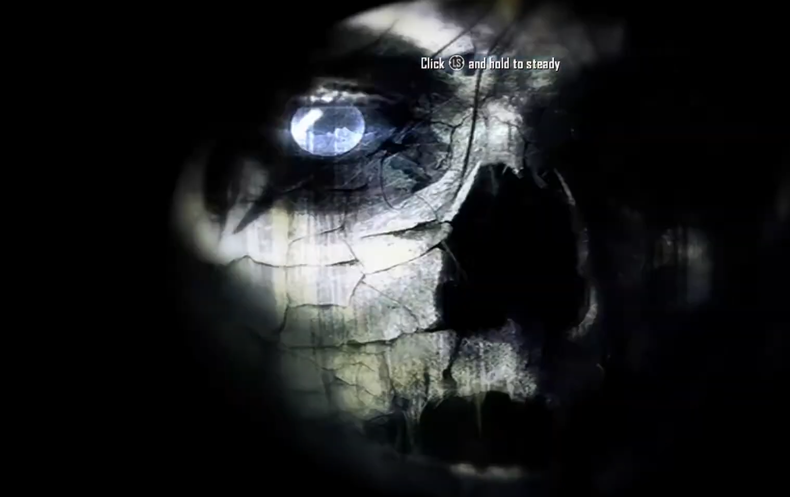
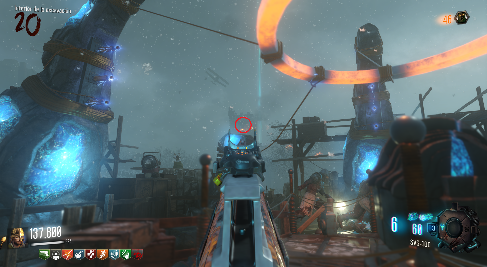

Jump Scare (Origins)

Requisitos:
Tener un fusil de precisión (francotirador).
Lo único que tendremos que hacer es apuntar con nuestro francotirador a la zona alta de la iglesia desde la Excavación.
